Vivado + PYNQ Anleitung
Bei allen übersprungenen Schritten sind die defaults auszuwählen.
PYNQ board files:
- PYNQ board files herunterladen
- in die Vivado installation/2020.1/data/boards/board_files entzippen
- z.B. /opt/Xilinx/Vivado/2020.1/data/boards/board_files
Neues Projekt:
- In Vivado ein neues RTL Projekt erstellen
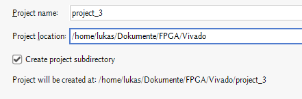 - Sources hinzufügen - add files - alle VHDL sources auswählen, die man im Projekt braucht
- Bei target language VHDL auswählen

- Bei Board PYNQ-Z1 auswählen
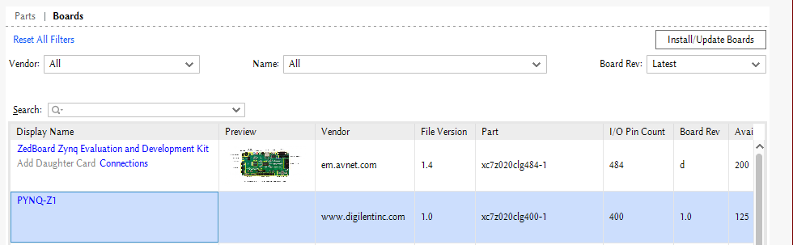
AXI Lite Interface:
Erstellen:
- Tools -> Create and Package new IP...
- Create a new AXI4 peripheral

- Select number of Registers
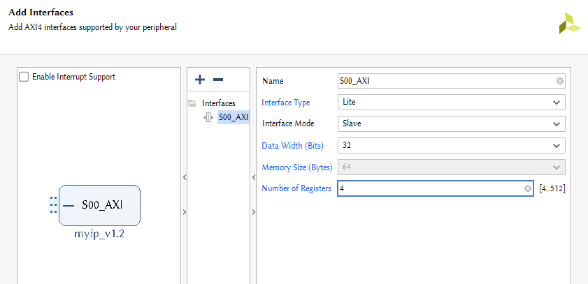 - Edit IP
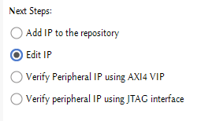
Bearbeiten:
- Öffne die AXIlite Schnittstelle in deienem Texteditor der Wahl.

- In [IPname].vhd bei port, der component [IPname]_S00_AXI und in der port map die Pins hinzufügen.


- In [IPname]_S00_AXI.vhd bei port die Pins hinzufügen & die Logik verändern
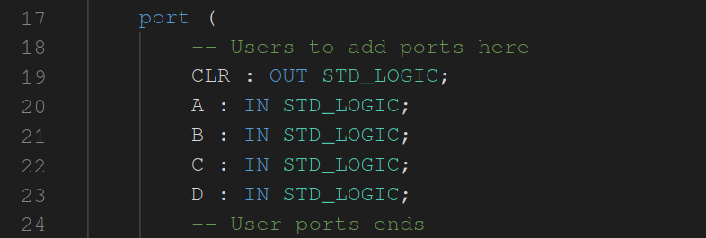- Außgänge können kombinatorisch mit einem bit der Register verbunden werden.

- Bei eingängen müssen wir uns in die Logik des generierten VHDLs einhängen.
Das machen wir etwas weiter oben, wenn eigentlich der Register gelesen werden soll, den wir dann überschreiben.
- Außgänge können kombinatorisch mit einem bit der Register verbunden werden.

re-packageing:
- In dem edit IP Fenster von Vivado bei Ports and Interfaces "Merge changes from Ports and Interfaces Wizard" klicken.

- In Review and Package ganz unten auf "Re-Package IP" klicken
Block design:
-
Ein neues Block design erstellen

-
Das ZYNQ7 Processing System hinzufügen:
- rechtsklick -> ZYNQ7 Processing System auswählen
-
Run Block Automation
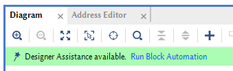 -
Das AXI Lite Interface auf die gleiche Weise hinzufügen ( heißt vermutlich myip)
-
Run Connection Automation

-
Nun können die eigenen Module importiert werden:
- rechtsklick -> add Module -> das zu importierende Modul auswählen
-
Dann per drag & drop die Pins des Moduls mit dem AXI Lite Interfaces verbinden.
Das fertige Block Design sollte dann in etwa so aussehen:
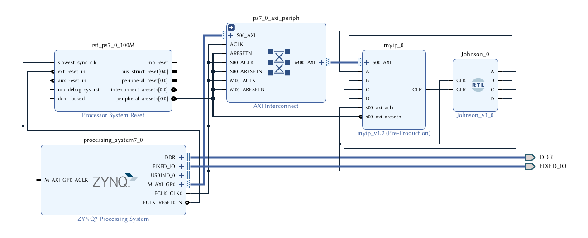
-
Speichen nicht vergessen!
-
Jetzt müssen wir unser Block Design als top level setzen, dafür muss dieses aber in ein VHD wrapper gewrappt werden.
-
Also wählen wir unser Block Design in den sources aus

-
Dann rechtsklicken wir und wählen create HDL Wrapper aus

-
Um dann diesen Wrapper als top in seinem Rechtsklickmenü auszuwählen

Generate Bitstream
- Der nächste Schritt ist Vivado den Bitstream generieren zu lassen, der dann auf den ZYNQ hochgeladen wird
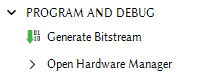
Upload to PYNQ
Mit dem PYNQ verbinden
- Mit dem gsg VPN verbinden
- ssh -L 9090:pynq:9090 -N [gsg username]@TiLab[6 oder 7].informatik.uni-bonn.de
- browser auf localhost:9090 öffnen

- login mit passwort xilinx
- Einen Ordner erstellen, um die Dateien zu verwalten

- Den Ordner umbenennen
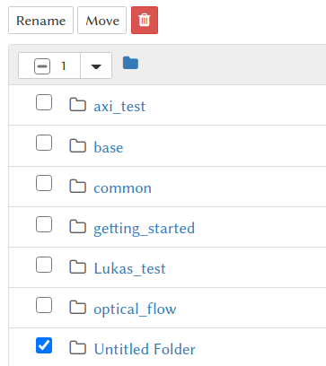 - Aus [projektName]/[projektName].srcs/bd/[designName]/hw_handoff die hwh datei hochladen
- tcl sollte eigentlich auch funktionieren tut es aber nicht.

- Aus [projektName]/[projektName].runs/[implementationName] die bit datei hochladen

- Beide Dateien müssen gleich heißen
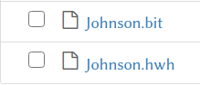 - Eine neue Python3 Datei erstellen
- PYNQ importieren:
from pynq import Overlay - Overlay hochladen:
overlay = Overlay('Johnson.bit') - Informationen über das Overlay anschauen:
overlay?

- unter IP Blocks sollte nun unser AXI Lite Interface zu sehen sein.
- Auf dieses kann man nun wie folgt zugreifen:
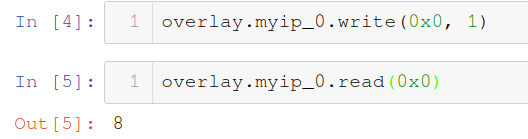 - Die Adresse, die als Argument angegeben wird ist das Register auf dem AXI Lite interface.
- Die Daten beim Schreiben sind immer 32 bits.